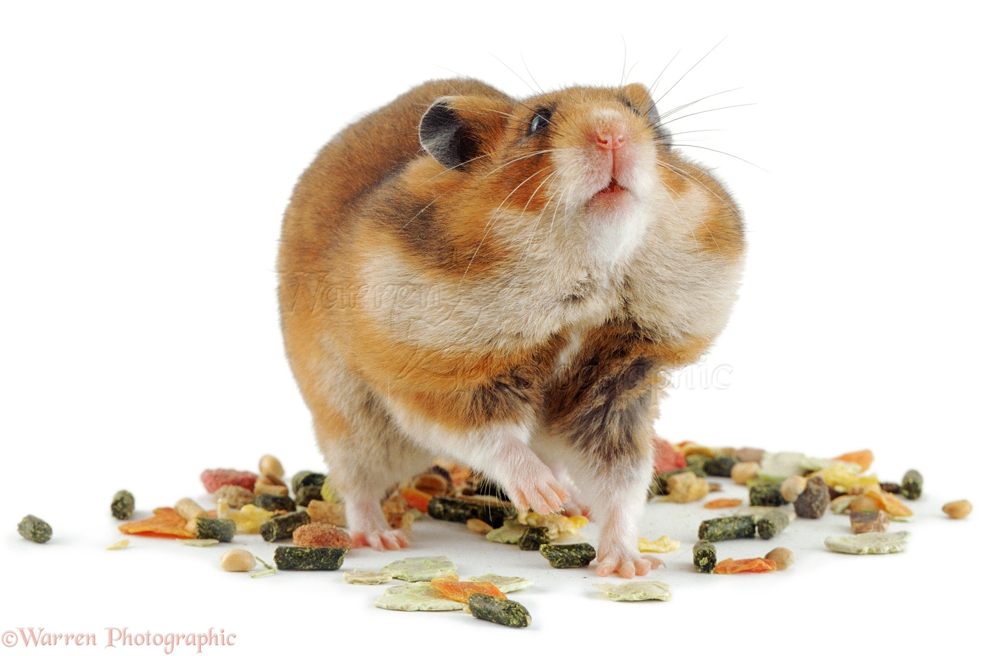

At PurrPets, we know that a hamster's pouch is never truly empty. To keep your tiny friend healthy, we focus on high-quality seed mixes and "scatter feeding" to mimic their natural instincts.

Follow the PurrPets plate guide for a long-lived hamster:
| Food Category | Daily Amount | The "PurrPets" Choice |
|---|---|---|
| High-Quality Seed Mix | 1-2 Tablespoons | Mixes with pellets, grains, and dried mealworms. |
| Fresh Vegetables | Small thumbnail-sized piece | Broccoli, Cucumber, Carrots, or Spinach. |
| Protein Boost | Once per week | Plain boiled egg or a tiny piece of cooked chicken. |
| Treats | Rarely | Sunflower seeds or a tiny piece of apple (no seeds). |
Instead of using a bowl, try scattering the food directly onto the bedding! This forces your hamster to "hunt" for their meal, providing mental stimulation and exercise. They will spend hours sniffing out every last seed.
Always provide a fresh water bottle or a small, heavy ceramic water bowl. Because hamsters are desert animals, they don't drink a lot, but they need access to clean water 24/7. Check the nozzle of the water bottle daily to ensure it hasn't become clogged!